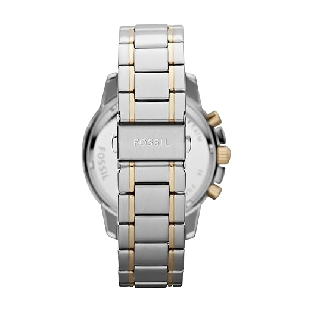
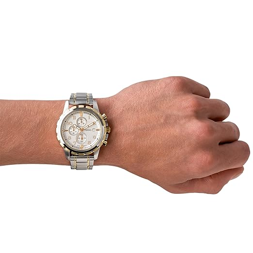
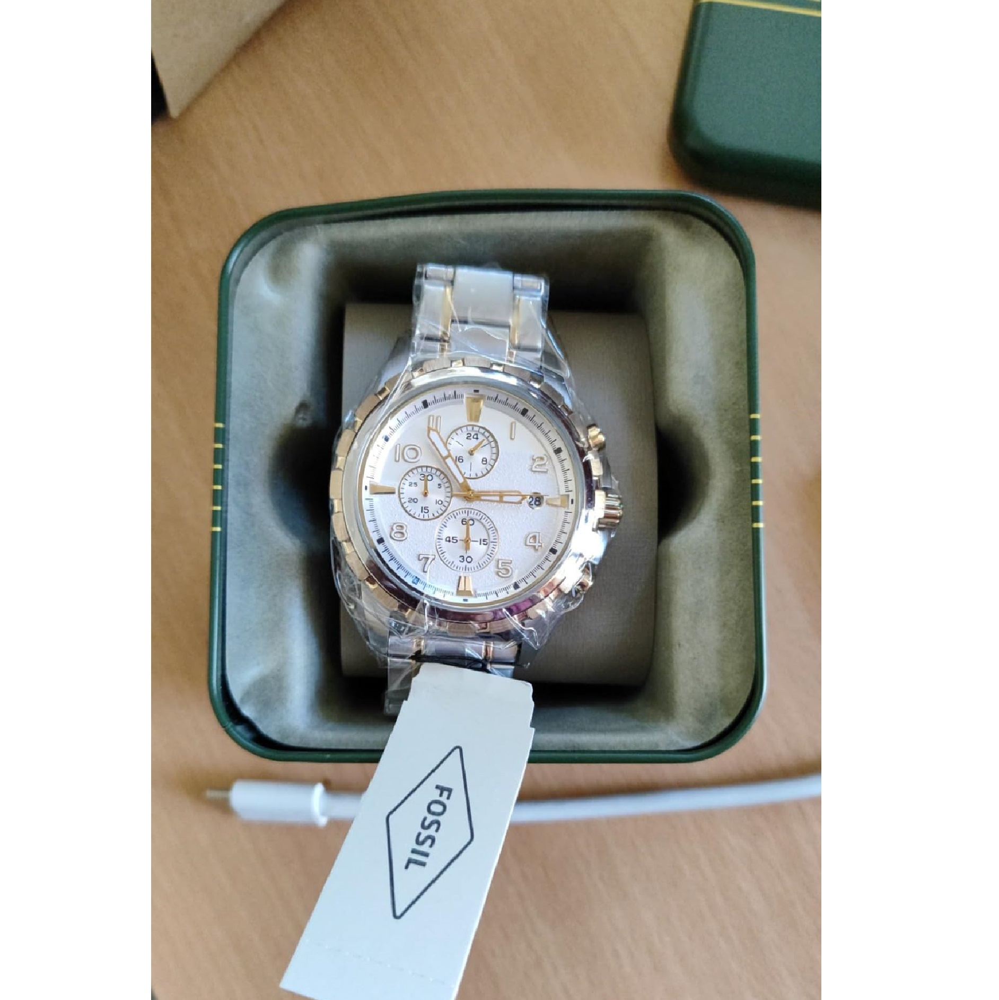
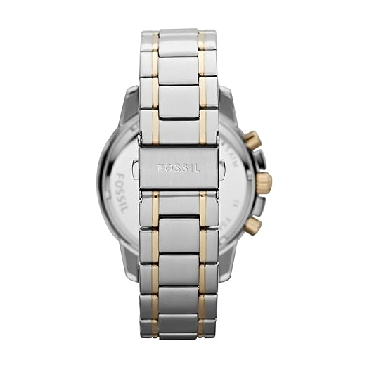
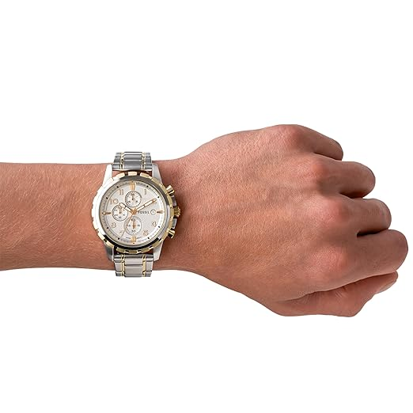
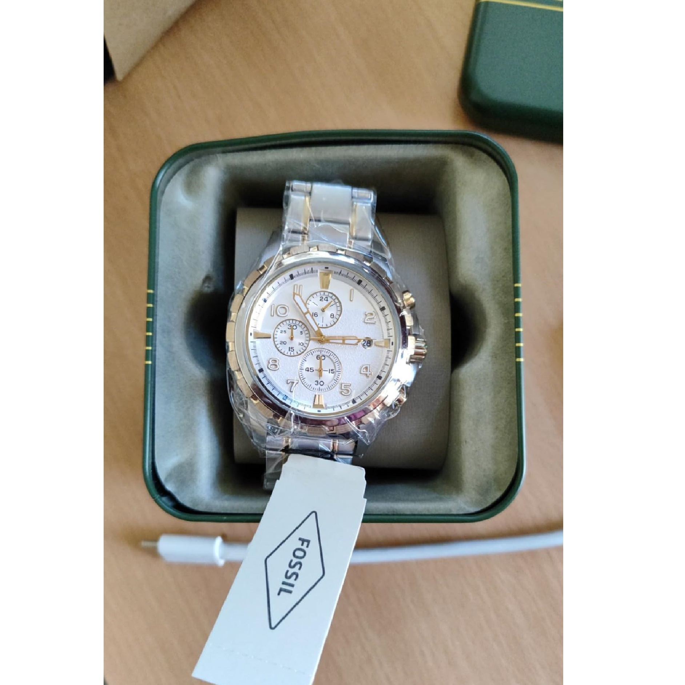
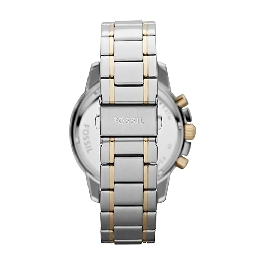
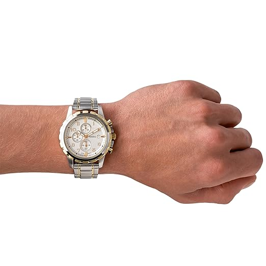
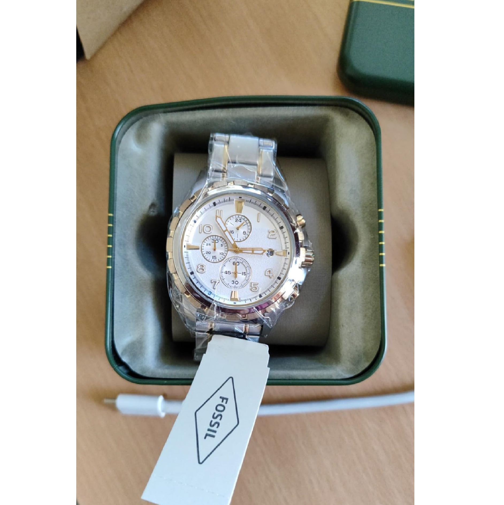
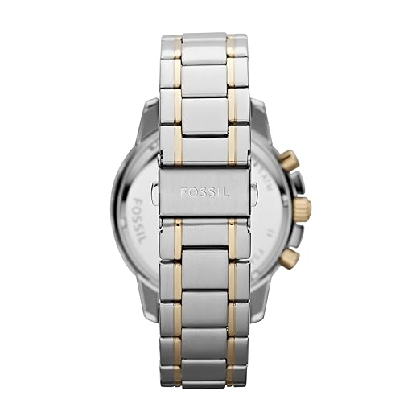
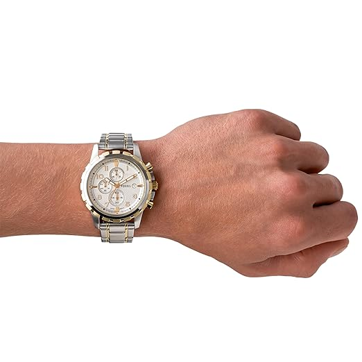
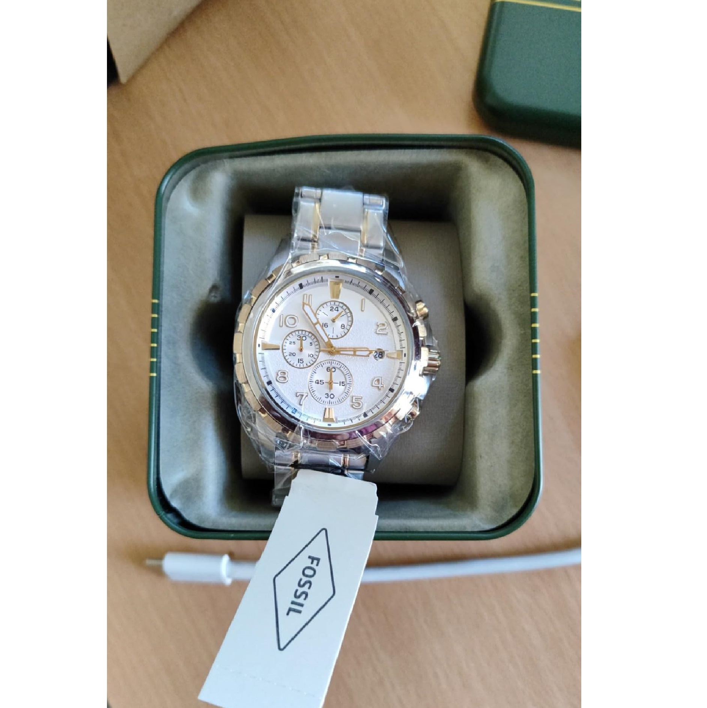
The Fossil Analog FS4795 men’s watch is a masterclass in elegance and precision — the kind of timepiece that turns a simple glance at your wrist into a statement of style. Designed for those who appreciate premium watches with heritage appeal, this model blends a bold presence with timeless design cues that never go out of fashion. The 45mm silver-tone stainless steel case commands attention, while the slim 11mm profile ensures a comfortable fit for all-day wear. Its mineral crystal glass offers superior scratch resistance, keeping your watch face pristine for years. Underneath its refined exterior lies a dependable quartz movement, ensuring unmatched accuracy without the hassle of frequent adjustments. The sophisticated silver dial captures light beautifully, creating a subtle yet captivating shimmer that reflects the wearer’s personality — confident, detail-oriented, and effortlessly stylish. This watch transitions seamlessly from boardroom meetings to weekend outings, making it one of the most versatile men’s watches you can own. For the modern gentleman in India who seeks a balance of performance and aesthetics, the Fossil FS4795 delivers on every front. The multicolor stainless steel finish adds a touch of luxury, while its water resistance offers peace of mind for everyday wear. It’s more than a watch — it’s an extension of your personality, a subtle reminder that true style is in the details. With a strong 4.3-star rating from verified Amazon buyers, this timepiece has already won the trust of discerning customers worldwide. Priced at just ₹11,596, it offers exceptional value for a luxury men’s analog watch from a globally respected brand. If you’ve been searching for a watch that blends durability, style, and precision into one irresistible package — your search ends here. Click the links to explore the latest offers and secure this classic before it’s gone.